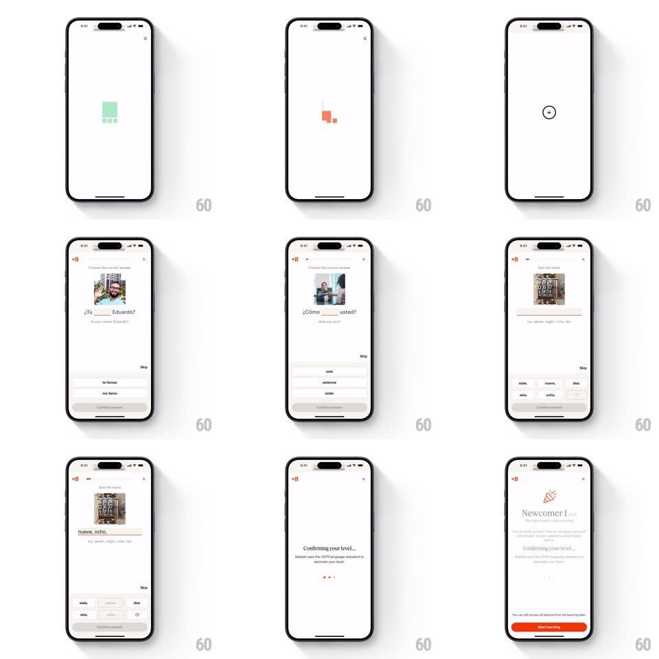

Media
Frame-by-frame

Rebuild this interaction 1:1: Babbel's placement quiz - a mascot-spinner load into fill-in-the-blank questions with word banks and tile building, ending in a level-confirmation screen.

Rebuild this interaction 1:1: Babbel's placement quiz - a mascot-spinner load into fill-in-the-blank questions with word banks and tile building, ending in a level-confirmation screen.
## Integration
Integration: stack-agnostic spec - springs given as stiffness/damping, timed motions as duration + curve; map every value to your framework and animation library of choice.
## Scene
From the Babbel home ("Answer a few questions to find your level" red card), the quiz opens: a loading spinner (a yellow rounded square with a check that morphs colors), then question screens - an image with a gapped sentence ("Tu ___ Eduardo?"), a word bank of pill options, a "Confirm answer" red button - and a final "Confirming your level..." screen citing the CEFR standard.
## Motion spec
Pattern: staged quiz flow with morphing loader.
- Loader: the rounded-square badge cycles background colors (yellow to green, 400ms crossfades) while its check bounces (scaleY 0.8 to 1, 500ms loop); ~1.2s total.
- Question enter: the photo slides down from the top (spring ~360/26), the sentence fades in, then word-bank pills slide up with 60ms stagger (translateY 20px to 0, spring ~400/24).
- Tap a pill: it lifts into the sentence gap (arc path, 250ms, ease-out) and settles with a soft thud (scale 1.08 to 1, 150ms); the gap's dashed underline becomes solid; Confirm answer enables (fills red, 150ms).
- Tile questions: tapped tiles slide into the answer row in order (200ms each); tapping a placed tile returns it to the bank with the reverse arc.
- Confirm: the button press ripples, the placed answer flashes green (correct) or shakes red (wrong, +-6px, 2 cycles of 100ms), then the next question slides in from the right (300ms).
- Finale: "Confirming your level..." fades in with a small animated ellipsis; the CEFR note types in below (fade, 300ms).
## Calibration
- The pill-to-gap arc is the core delight - it must travel, not teleport.
- Word bank order reshuffles per question; the animation timings do not change.
## Reduced motion
Pills fade into gaps; questions crossfade.
## Don't miss
- The red is Babbel's brand red and only appears on primary actions and the home card.
- Incorrect answers shake in place - the quiz never navigates away on a wrong answer.